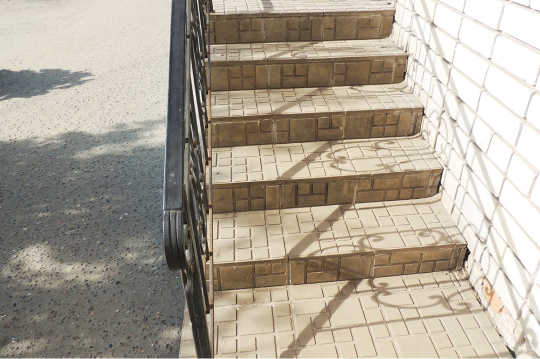

<div class="item-work">
    <a data-fslightbox="work-gallery" href="img/work-gal-2.jpg" class="media-cover media-cover--fancy">
        <picture>
            <source srcset="img/work-gal-2.webp" type="image/webp">
            
        </picture>
        <svg><use href="files/images/icons/sprite.svg#search"></use></svg>
    </a>
    <h6>Оформление крыльца для компании «Название»</h6>
    <button type="button" class="item-work__btn" data-bs-toggle="modal" data-bs-target="#modalCallback">Хочу такое крыльцо</button>                           
</div>